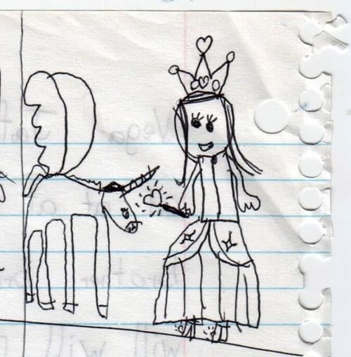

about me
Vega Spring Jafri is an artist born in Manhattan, raised in Queens and Hong Kong, and living on Long Island.
Though her practice is primarly illustrative— both analog and digital with a focus on gender, the body, insect motifs, and nature motifs— her recent artworks present a shift in focus toward 2D game arts and 3D-modeled interactive environments.
She is currently pursuing a BFA at Parsons School of Design and is majoring in Game Design under the Design and Technology program.
software experience: procreate, cinema4D, unity
contact: giantwhitedeer@gmail(dot)com
